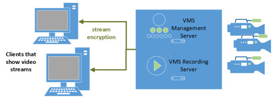
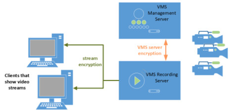

Encrypting Video Communication Flows
This section provides an overview of how to encrypt the communication flows between Desigo CC. and the Milestone / Siveillance VMS.
NOTE: In addition to configuring encryption as described here, to fully secure the video installation it is recommended to use Active Directory for the VideoApiService account user. For more information see Create VideoApiService Account in Windows.
You can encrypt the video streams sent from the VMS to the client stations. You can also encrypt the bidirectional communication between VMS management server and VMS recording server(s), when these are on separate computers.
VMS components on one computer | VMS components on separate computers |
|---|---|
 In this case there is only one computer on the VMS side, which hosts both the VMS management server and the VMS recording server. |  In this case the VMS architecture includes a VMS recording server on a separate computer from the VMS management server. |
Prepare Certificates
VMS components on one computer | VMS components on separate computers | |
|---|---|---|
Create the root certificate for encryption | Using SMC, create a root certificate to use for encryption:
| |
Create SSL host certificate for VMS computer | Create host certificate issued to the VMS computer:
| Proceed as at left, but in this case create two host certificates: one issued to the VMS management server, and another issued to the VMS recording server. NOTE: Make sure the Subject name of each created host certificate matches the full computer name for which you are creating it. |
Install root certificate on VMS computer | Install the .CER root certificate on the VMS computer, in Local Machine > Trusted root:
| Proceed as at left, but in this case install the root certificate in both the VMS management server and the VMS recording server computers. |
Install SSL host certificate on VMS computer | On the VMS computer, install the.PFX host certificate, in Local Machine > Personal:
| Proceed as at left, but in this case:
|
Verify that certificates are installed | In the Microsoft Management Console (MMC):, add the Certificates snap-in, setting it to manage certificates for the Computer account on the Local computer.
| |
 and select Create root certificate (.pfx).
and select Create root certificate (.pfx). .
. Configure Stream Encryption
VMS components on one computer | VMS components on separate computers | |
|---|---|---|
Grant read permission to recording server service user | On the VMS computer, the recording server service user must be granted read permission to the private key of the SSL certificate.
| Proceed as at left, but in this case perform the steps on the separate VMS recording server computer, and select the host certificate that you installed on that machine. |
Enable stream encryption |
| Proceed as at left, but in this case perform the steps on the separate VMS recording server computer, and select the host certificate that you installed on that machine. |
Install root certificate on all streaming clients | When video stream encryption is enabled, the root certificate must be installed on each of the Desigo CC client stations, and on all the Milestone/Siveillance clients that stream data from the VMS. Clients without the root certificate will not be able to show video streams.
| |
Configure VMS Server Encryption
VMS components on one computer | VMS components on separate computers | |
|---|---|---|
Enable two-way VMS management server encryption | n.a. | This step encrypts the two-way communication between the VMS management server and the VMS recording server.
|
Event Server Encryption
Starting from Milestone/Siveillance VMS version v22.1a 2022 R1, on the VMS Server Configurator tool there is also a toggle to select an Event server and add-ins certificate. If you have a separate Event server computer, you can also secure this communication channel on the VMS side. Refer to the VMS documentation for details.